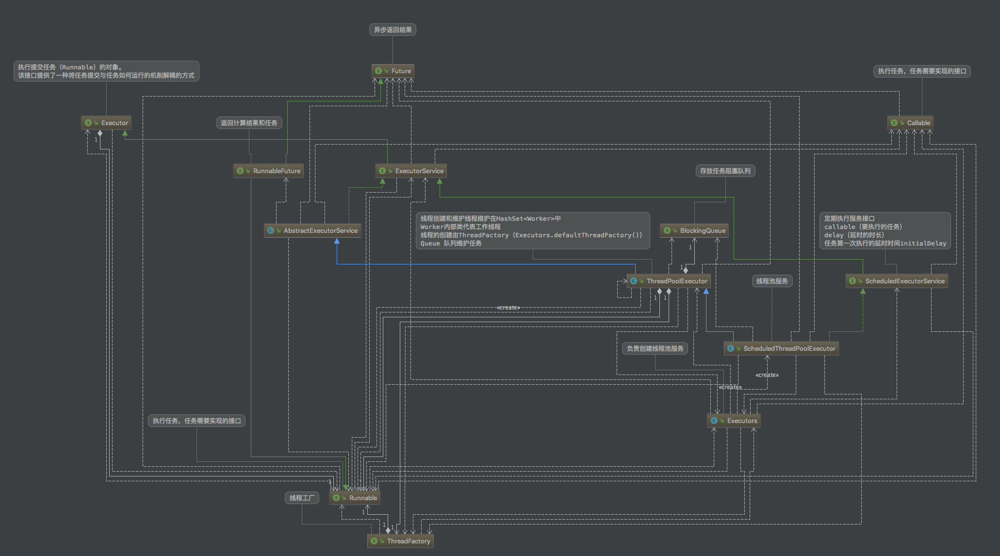

Executor 定义了一个执行者接口方法，是所有任务调度框架中的接口（线程池和队列模式） void execute(Runnable command); 提交任务执行，无返回值，所有任务执行都是由它真正执行
ExecutorService 是在Executor基础上定义了服务的功能，使他拥有跟多的功能有返回结果的任务,没有实现execute关闭服务void shutdown();
关闭返回所有未完成的任务
List<Runnable> shutdownNow();
Runnable 是没有返回结果的，所以实现接口，并且引用对象，run方法执行完成添加结果到result ，这样在get中可以获取到task提交的任务，T返回的结果（执行完 run方法后 会将result set到Future中）
<T> Future<T> submit(Runnable task, T result);
批量添加任务返回所有结果，在一个线程中完成，所有集合中的任务运行完成了才从invokeAll返回
<T> List<Future<T>> invokeAll(Collection<? extends Callable<T>> tasks)
throws InterruptedException;
AbstractExecutorService 抽象类实现了submit 而submit 也是对任务（Runnable 适配 封装成一个RunnableFuture）的封装最后提交任务到子类的execute 中
ThreadPoolExecutor 实现了execute方法任务的执行 维护一个任务的阻塞队列，以及维护工作线程队列，线程数量是根据务队列来null 来判断是否在创建新的线程，并且这个线程是无限循环，直到队列null，阻塞于此，那么根据最小数量判断是否让多处来的线程run完成，来维护线程此中的线程数量
- 如果少于corePoolSize线程正在运行，请尝试使用给定命令启动一个新线程作为其第一个任务。 对addWorker的调用以原子方式检查runState和workerCount，从而防止虚假警报在返回false时会在不应该时添加线程。
- 如果任务可以成功排队，那么我们仍然需要仔细检查是否应该添加一个线程（因为现有的线程自上次检查以来已经死掉）或者自进入此方法以来池已关闭。 所以我们重新检查状态，如果有必要的话回滚队列，如果没有的话，就开始一个新的线程。
- 如果我们不能排队任务，那么我们尝试添加一个新线程。 如果失败，我们知道我们已关闭或饱和，因此拒绝任务。